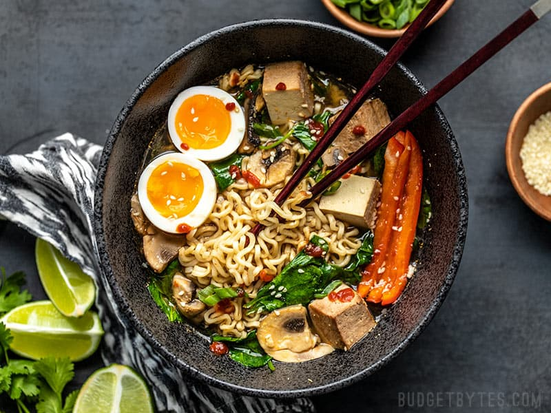
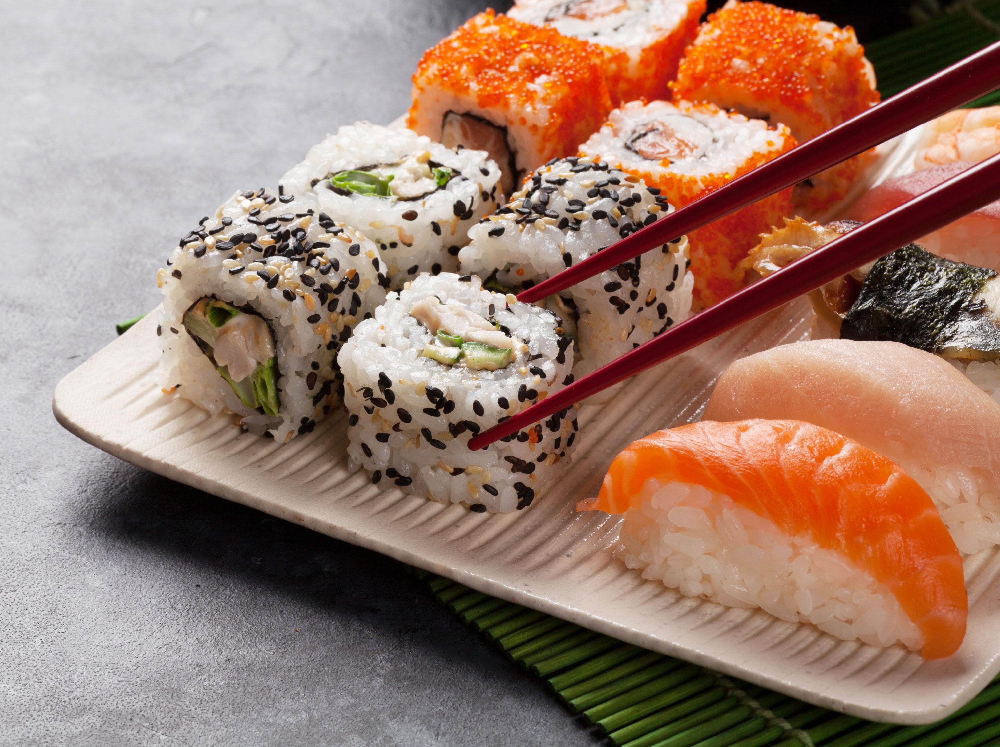

Ramen
Gracias a mi afición por el manga y el anime conocí el ramen hace ya muchos años, cómo no, con Naruto. Al conocido personaje le encantaba devorar cuencos de sopa de fideos con ingredientes variados a la velocidad del rayo, como si fuera el más exquisito manjar. Ahora el ramen se cuela en la carta de muchos restaurantes, e incluso cada vez hay más locales especializados en este plato.
Sushi
Si hay algo en lo que todos estamos de acuerdo, probablemente sea nuestra afinidad compartida por el sushi. Esta comida es básicamente algo universal cuando no sabes qué quieres comer y se debe a una muy buena razón. Puede que pienses que tiene una obsesión poco saludable, pero según la ciencia, esta no es la verdad completa: la verdad es que es adictivo.